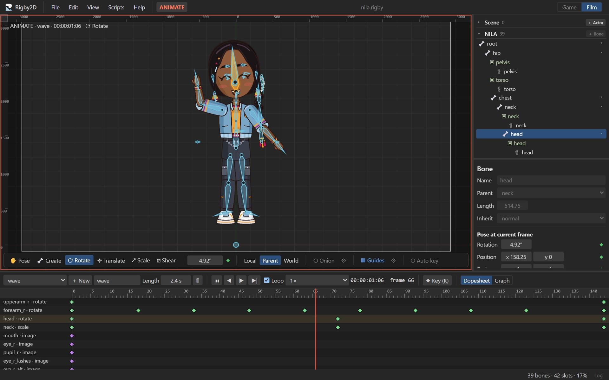

AutoRig
Import a layered PSD and get an editable rig: body parts found from the layer names, joints where parts meet, weighted meshes for bending parts and IK for arms and legs.
Open source · early alpha
Rig a layered PSD in one step, animate it for games and film, and play it anywhere with the included runtimes. AI assistants can inspect, rig and animate your projects through the built-in MCP server.
Free · MIT or Apache-2.0 · No account, no install for the browser editor

One editor for game characters and animated film, with the tools that usually take three apps.
Import a layered PSD and get an editable rig: body parts found from the layer names, joints where parts meet, weighted meshes for bending parts and IK for arms and legs.
Animate once, reuse on other characters. Bones are matched automatically (L_UpperArm finds upperarm_l) and movement is scaled to each character's size.
Bones, weighted meshes, linked meshes, image sequences, skins, events, clipping and paths, with IK, transform, path, physics and slider constraints.
Setup and Animate modes, dopesheet and graph editor with Bézier handles, onion skinning, a pose library and face controls that blend between poses.
Render transparent PNG sequences, WebM with alpha and MP4 at 4K, with timecode, an animatable camera, audio tracks and loudness-driven lip-sync.
Python 3 is built in. Write scripts against the open project and turn them into tools in the Scripts menu. Each run is one undo step; failures leave the project untouched.
Pop the Timeline, Tree and Inspector out onto a second monitor and recall saved window layouts with a shortcut. Pixel-art projects stay sharp end to end.
Interactive lessons with a practice character take you from a drawing to a moving character, right inside the editor.
Built for AI assistants
Rigby2D ships a Model Context Protocol server. Any MCP-capable AI assistant can read rigs, evaluate poses with the real runtime, find export problems, add bones and eased keys, AutoRig a PSD, retarget animations, lip-sync dialogue and run Python, all inside the folders you allow.
Which images are missing from hero.skel?
Add a 1-second wave animation to rigbytron.rigby that raises the right arm and fires a hi event at the end.
Add line.wav to the talk animation and lip-sync the mouth control to it.
AutoRig character.psd.
Play it anywhere
A dependency-free JavaScript runtime with a reference WebGL renderer, and a Rust port that matches it frame by frame,
3 to 4× faster, powering the Godot 4 node RigbySkeleton2D. Unity is next.
The animation at the top of this page is that JavaScript runtime, drawing Rigbytron live.
Runtimesconst skeleton = Skeleton.fromJson(json);
const pose = new Pose(skeleton);
const state = new AnimationState();
state.play(skeleton, 'walk', true, 0.2);
// every frame:
state.update(skeleton, 1 / 60);
state.apply(skeleton, pose);
for (const quad of pose.quads(skeleton)) {
// draw quad.positions with quad.uvs
}Latest release: see all files
Downloads are not code-signed yet. Each release lists SHA-256 checksums; compare them before running anything.